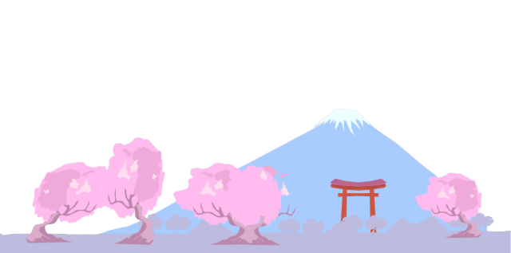
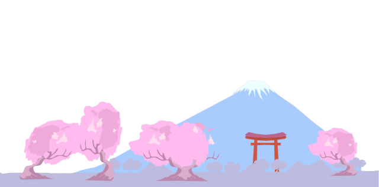

I'm Nycolas.
a programmer.


I am a Web Developer and Game Developer. Even that my current coding experience and skills are small, I still try to learn and hopefully one day become good. I graduated San Francisco State University with a B.S in Biochemistry and two minors in Biology and Communications. I was born in Brazil, so I speak Portuguese. As I move to the United States, I learn English, Spanish, and I currently planning to learn a new langage. In my free time, I enjoy watching anime, reading mangas and playing Lost Ark.
I always loved gaming, so I started to take coding classes so that one day I can make my own video game. I learned Python, HTML, CSS, and the still more languages that I want to learn so that I can develop my own game. I might not have a lot of real world/work experience, but I love the feeling of learning and following someone to gain experience. This is my first website too, and I am so proud of it, it might be simple and silly, but it is mine.

During my undergrad, most of my science classes focused on analysing data collected from our own research experiements. Using spreadsheets and other analytical tools to collect and make visuals to present our points.